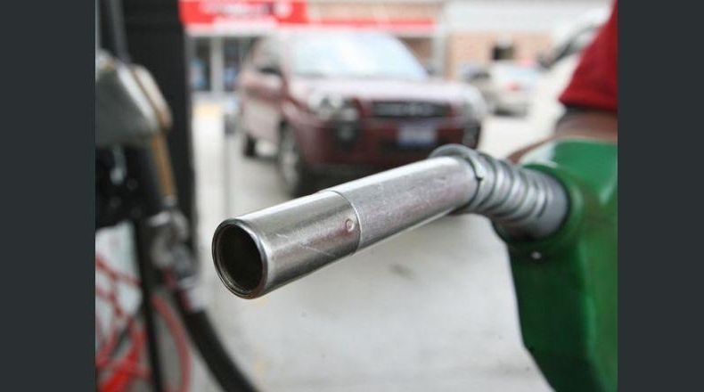

Diario el periodico
Aumento en el precio de gasolina
El Ministerio de Economía ha informado hoy sobre los precios de referencia de los combustibles para la segunda quincena de agosto reportándose leves bajas en los derivados del petróleo, producto de la incertidumbre a escala internacional por los conflictos comerciales entre Estados Unidos y China. La gasolina regular disminuirá $0.01 en las tres zonas del país, con precios que oscilaran entre los $3.52 y $3.56 por galón. La especial también bajará de precio. Será igualmente de $0.01 en las zonas central y oriental, pero para occidente no hay reducción. El precio por galón será entre los $3.73 y los $3.77. El diesel solo bajará $0.01 en el centro, oriente y occidente no tendrá disminución. Su precio se podrá encontrar desde los $3.18 hasta los $3.23. Para el diesel bajo en azufre, la reducción será de $0.02 centavos para el centro y occidente y de $0.01 para oriente. El galón se podrá encontrar en los diferentes centros de abastecimiento entre los $3.24 y $3.29. Estos precios estarán vigentes desde el 14 al 27 de agosto. 
Siguiente